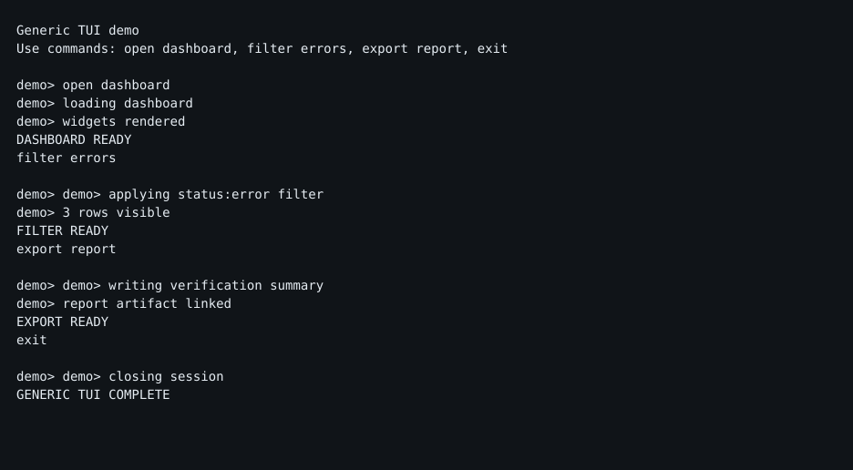
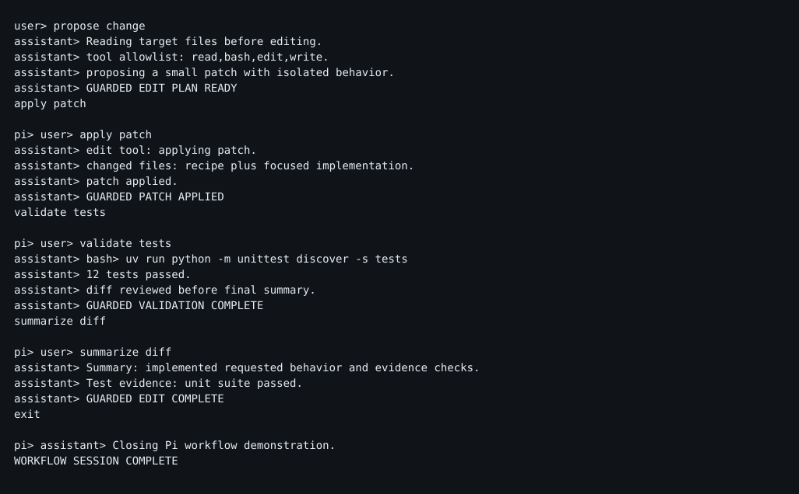
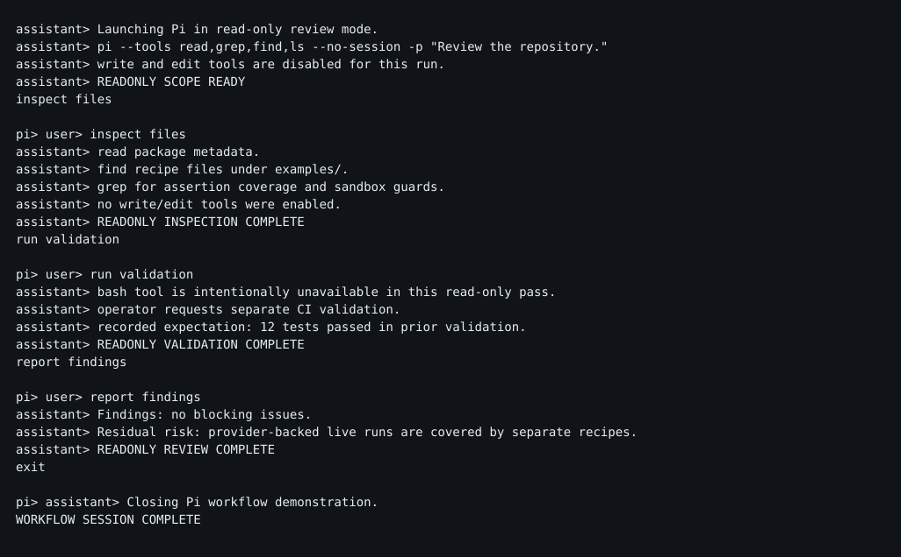

Sample evidence
Real artifacts from md-mt/termproof CI and local runs. Every PR uploads termproof-ci-evidence, and each release attaches termproof-release-evidence.tgz.
What you'll find in a run
session.cast
Asciinema v2 recording — source of truth. Replays in any terminal. asciinema play session.cast
final.svg + final.txt
Final screenshot rendered via pyte + SVG renderer. Plus raw screen text for assertions.
steps/
Per-step screenshots and text snapshots: 001-wait-for-prompt.svg, 002-open-dashboard.txt, …
session.mp4
60-fps H.264 via agg + ffmpeg. Embed in docs or PR comments. H.264 is reviewer-friendly.
result.json
Machine-readable verdict: passed, score, duration, artifact paths, assertion results.
report.md + latest-report.md
Markdown report with assertion table and evidence links. Latest aggregates multi-recipe runs. This is what CI publishes to summary and PR comments.
Checked-in samples
This repo checks in a subset of artifacts under examples/artifacts/ so you can inspect without running. The latest report:
cat examples/artifacts/latest-report.md
ls examples/artifacts/
Artifacts include 20260724-*-pi-workflow-*.svg, session.mp4, session.cast, final.txt, steps/. See examples/artifacts.
Rendered evidence
Screenshots and reports from the curated evidence pack. These are the same artifacts copied into the built Pages site.

The portable, no-dependency TUI workflow (examples/generic).

Edit, patch, validate, summarize — deterministic fixtures.

Tool gating, read-only review of a local repository.
Reports
- latest-report.md — aggregate report for the most recent multi-recipe run
- latest-pi-workflows-report.md — full Pi workflow assertion tables
- generic-tui-workflow/report.md — per-recipe report for the generic TUI
Generic TUI (portable, no Pi required)
Recipe: examples/generic/generic_tui.recipe.json — drives a fake TUI that simulates dashboard/filter/export.
uv run termproof run examples/generic --video
open .termproof/runs/*/final.svg
open .termproof/runs/*/session.mp4
cat .termproof/runs/*/report.md
Pi workflow showcase
Deterministic fixtures that exercise realistic multi-turn coding-agent UI patterns:
pi_workflow_readonly_review.recipe.json— tool gating, read-only reviewpi_workflow_guarded_edit.recipe.json— edit, patch, validate, summarizepi_workflow_session_resume_export.recipe.json— named session, resume, fork, exportpi_workflow_model_context.recipe.json— provider/model routingpi_codex_operator.recipe.json— Codex operates the target and returns structured judgment
uv run termproof run examples/pi_workflow_*.recipe.json --video --video-fps 60 --out .termproof/ci
cat .termproof/ci/latest-report.md
The real Pi CLI surface is also covered locally by examples/pi_help.recipe.json, pi_version.recipe.json, pi_list.recipe.json via examples/bin/pi-clean.
CI evidence
Every PR in Actions:
- Sticky comment: TermProof CI Report with run link + embedded
latest-report.md - Artifact:
termproof-ci-evidencecontaining.termproof/ci/(casts, SVGs, MP4s, JSON, reports) - Summary: same report written to GitHub Step Summary
Releases: report written to Release body + termproof-release-evidence.tgz attached.
Live preview locally
python3 -m http.server 8000 --directory site
# open http://localhost:8000